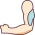

Dicas: Alinhe os pés aos ombros e flexione os joelhos de leve,
incline-se até a barra ou halteres estarem abaixo do seu joelho
mas sem arquear as costas, contraia a lombar e o abdômen deixando
os braços próximos as costelas !
Remada Serrote
Repetições: 3x10
Grupo muscular
Dicas: Mantenha sua coluna reta, puxe a carga com as costas e não com os braços lembrando-se de
não utilizar o tronco de maneira a rotacioná-lo para dar impulso e puxe a carga em sentido ao seu abdômen.
Remada no Triângulo
Repetições: 3x12
Grupo muscular
Dicas: Puxe a carga em direção ao abdômem contraindo as escápulas e estufando o peito,
evite trancos no equipamento isso pode sobrecarregar ou lesionar os ombros.
Tríceps na Polia
Repetições: 3x15
Grupo muscular

Dicas: Use somente a flexão de cotovelo, empurre o peso sentido ao chão e não sentido seu abdômen
lembrando-se de manter as escápulas neutras para não auxiliarem o cotovelo no movimento.
Tríceps Corda
Repetições: 3x15
Grupo muscular
Dicas: Incline-se levemente, estabilize os cotovelos, flexione o tríceps e ao mover a carga movê-la
sentido ao chão lembrando-se de abrir a corda ao descer, fechar ao subir.
Tríceps Testa
Repetições: 3x10
Grupo muscular
Dicas: Desça a barra ou o halter um pouco atrás da sua testa para exigir mais do tríceps mantendo
os cotovelos na largura dos ombros e sem abrir a pegada da barra ao descer a carga.